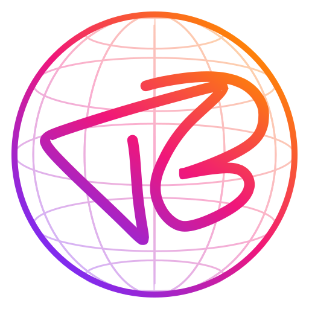

Prywatna integracja domowego serwera Tymoteusza Białkowskiego z jego Kalendarzem Google i Listą zadań Google. Serwer dopisuje do kalendarza wydarzenia i przypomnienia z jego własnych projektów (np. przeglądy samochodu, grafik zmian, podróże). Aplikacja ma jednego użytkownika i nie jest udostępniana nikomu innemu.
A private integration between Tymoteusz Białkowski's home server and his own Google Calendar and Google Tasks. Single user, not offered to anyone else.
Polityka prywatności / Privacy policy · Warunki / Terms
Kontakt: tymiec1337cs@gmail.com